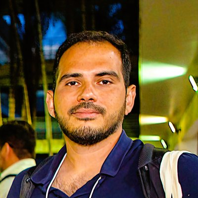

Professor e Pesquisador · Engenharia Elétrica · Otimização sob Incerteza · Inteligência Artificial Bayesiana
Professor and Researcher · Electrical Engineering · Optimization under Uncertainty · Bayesian AI
Otimizando sistemas e prevendo resultados sob incertezas
Optimizing systems and predicting outcomes under uncertainty
Em andamento
Currently working on
Sobre
About
Professor no Departamento de Engenharia Elétrica da Universidade Federal de Minas Gerais desde agosto de 2018. Graduado (2012), Mestre (2015) e Doutor (2018) em Engenharia Elétrica pela Escola de Engenharia de São Carlos — Universidade de São Paulo (EESC-USP). Atualmente é colíder do Grupo de Pesquisa Operacional e Sistemas Complexos (Operations Research and Complex Systems, ORCS) e membro do Grupo de Otimização e Projeto Assistido por Computador (GOPAC). Membro da Sociedade Brasileira de Inteligência Artificial (SBIA). Bolsista Produtividade C do CNPq. Membro permanente do PPGEE na linha de pesquisa em Otimização.
Professor at the Electrical Engineering Department of UFMG since August 2018. Bachelor's (2012), Master's (2015), and Ph.D. (2018) in Electrical Engineering from the School of Engineering of São Carlos — University of São Paulo (EESC-USP). He is currently co-leader of the Operations Research and Complex Systems (ORCS) research group and a member of the Computer-Aided Design and Optimization Group (GOPAC). Member of the Brazilian Society for Artificial Intelligence (SBIA). CNPq Productivity Fellow (Level C). Permanent member of PPGEE in the Optimization research line.
Sua pesquisa situa-se na interseção entre Otimização sob Incerteza e Inteligência Artificial Bayesiana para o suporte à decisão em sistemas críticos. Desenvolve técnicas e algoritmos com dados reais para criar modelos que preveem eventos, evitam falhas, melhoram o desempenho, a resiliência e a confiabilidade e reduzem custos e riscos. A pesquisa tem aplicação em energia, saúde e logística.
His research lies at the intersection of Optimization under Uncertainty and Bayesian Artificial Intelligence for decision support in critical systems. He develops techniques and algorithms with real data to create models that predict events, avoid failures, improve performance, resilience, and reliability, and reduce costs and risks. His research has applications in energy, health, and logistics.
Atua com projetos de pesquisa, desenvolvimento e consultoria em diferentes áreas, fornecendo soluções customizadas, suporte científico e treinamento personalizado.
Works with research, development, and consulting projects across different areas, providing customized solutions, scientific support, and personalized training.
Pesquisa
Research
Na interseção entre Otimização sob Incerteza e Inteligência Artificial Bayesiana para suporte à decisão em sistemas críticos.
At the intersection of Optimization under Uncertainty and Bayesian Artificial Intelligence for decision support in critical systems.
Modelagem probabilística de falhas, resiliência climática, análise estatística de dados de reparo, predição de taxas de falha.
Probabilistic failure modeling, climate resilience, statistical repair data analysis, failure rate prediction.
Aprendizado estrutural com AG multiagente, thresholds analíticos, BNs dinâmicas, fusão de informações, imputation em séries temporais.
Structural learning via multi-agent GA, analytical thresholds, dynamic BNs, information fusion, time-series imputation.
Alocação de dispositivos de proteção, otimização de rotas de patrulha, swarm intelligence para restauração.
Protective device placement, patrol route optimization, swarm intelligence for restoration.
Impacto do fator humano na confiabilidade, fusão Bayesiana de sensores.
Human factor impact on reliability, Bayesian sensor fusion.
Previsão de emissões de CO₂, gestão de microrredes com biogás, armazenamento de energia (BESS), integração renovável.
CO₂ emissions forecasting, microgrid management with biogas, energy storage (BESS), renewable integration.
ML para risco de fibrilação atrial, sistemas de suporte à decisão clínica, análise de dados de saúde.
ML for atrial fibrillation risk, clinical decision support systems, health data analysis.
Projetos
Projects
Convênio de cooperação científica entre instituições brasileiras (USP, UFMG, UFSC, CEFET) e francesas. Desenvolvimento de modelos de otimização sob incerteza para sistemas energéticos.
Scientific cooperation agreement between Brazilian (USP, UFMG, UFSC, CEFET) and French institutions. Development of optimization under uncertainty models for energy systems.
Avaliação da resiliência de sistemas de distribuição frente a eventos severos: modelagem de taxas de falha, duração de interrupções e estratégias de restauração.
Resilience assessment of distribution systems under severe events: failure rate modeling, interruption duration analysis, and restoration strategies.
Arcabouço automatizado de técnicas de otimização e tomada de decisão assistida, incluindo métodos multiobjetivo e preferências multicritério.
Automated framework for optimization and assisted decision-making, including multi-objective methods and multi-criteria preferences.
Investigação de fatores relacionados com a resiliência de sistemas de distribuição de energia: confiabilidade, robustez, manutenibilidade e disponibilidade de recursos.
Investigation of factors related to power distribution system resilience: reliability, robustness, maintainability, and resource availability.
Modelagem e integração dos Objetivos de Desenvolvimento Sustentável (ODS) em problemas de planejamento energético para a América do Sul.
Modeling and integration of Sustainable Development Goals (SDGs) into energy planning problems for South America.
Modelagem, simulação e otimização do fluxo de atendimento clínico, redimensionamento de instalações e implementação de sistema de monitoramento em tempo real.
Modeling, simulation, and optimization of clinical workflow, facility resizing, and implementation of a real-time monitoring system.
Curso de extensão sobre conceitos, processos e práticas da Engenharia de Sistemas para profissionais e estudantes.
Extension course on Systems Engineering concepts, processes, and practices for professionals and students.
Curso sobre Otimização (OT) e Inteligência Artificial (IA) para aplicações industriais: conceitos, modelos, métodos e aplicações.
Course on Optimization (OT) and AI for industrial applications: concepts, models, methods, and applications.
Orientação técnico-científica, fornecendo conhecimento especializado para auxiliar na formulação matemática e na definição da abordagem e do motor de otimização para um problema de planejamento da produção de aciaria e laminação, e oferecendo uma visão crítica das alternativas para futuras melhorias ao final do serviço.
Technical-scientific guidance, providing specialized knowledge to assist in the mathematical formulation and definition of the approach and optimization engine for a steelmaking and rolling production planning problem, and offering a critical view of alternatives for future improvements at the end of the engagement.
Publicações
Publications
28 artigos publicados · 52 trabalhos em eventos · Google Scholar · Lattes
28 journal articles · 52 conference papers · Google Scholar · Lattes
Ensino
Teaching
Disciplinas ministradas nos cursos de Graduação e Pós-Graduação do DEE.
Courses taught at Undergraduate and Graduate levels at DEE.
Graduação · Eng. de Sistemas
Undergraduate · Systems Engineering
Graduação · Eng. de Sistemas / Controle e Automação
Undergraduate · Systems Engineering / Control & Automation
Graduação · Eng. de Sistemas
Undergraduate · Systems Engineering
Graduação · Eng. Mecânica
Undergraduate · Mechanical Engineering
Pós-Graduação · SCT / Eng. Elétrica
Graduate · SCT / Electrical Engineering
Pós-Graduação · Eng. Elétrica
Graduate · Electrical Engineering
Graduação · Eng. de Sistemas
Undergraduate · Systems Engineering
Graduação · Eng. de Sistemas
Undergraduate · Systems Engineering
2 Doutorado (coorientação)
2 Doctoral (co-supervision)
4 Mestrado (orientador principal)
4 Master's (main advisor)
14+ TCC · Iniciação Científica
14+ Final projects · Scientific initiation
2 Doutorado (orientador principal)
2 Doctoral (main advisor)
6 Mestrado (orientador principal)
6 Master's (main advisor)
3+ TCC · Iniciação Científica
3+ Final projects · Scientific initiation
🏛️ UFMG ⚙️🧠 Eng. Elétrica 🔧 Eng. de Sistemas 🤖 Controle e Automação
Links
Links
Contato
Contact
Interessado em colaboração acadêmica, projetos de P&D ou parcerias institucionais?
Interested in academic collaboration, R&D projects, or institutional partnerships?